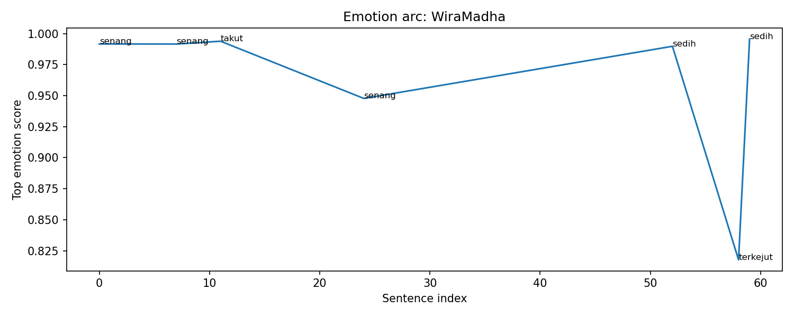
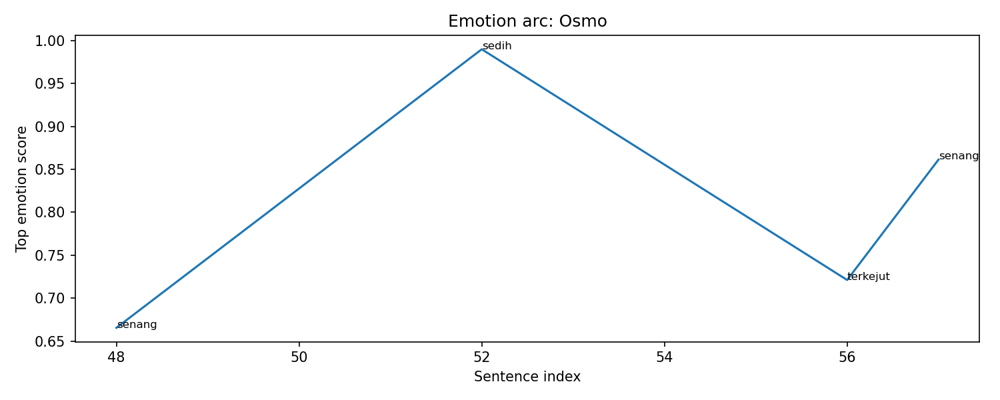

Overall Chapter Summary
WiraMadha faces a choice in a challenging quest and prepares for the journey ahead.
Chapter Drift Analysis
Similarity: 1.0000
Drift: 0.0000
Low drift. The chapter remains semantically close to the early story baseline.
Bug Severity Distribution
Story Bugs Found
No story bugs detected by current rules.
Character Arc Analysis
Ahol

Emotional Arc Summary
Ahol's emotional journey in this chapter reflects a mix of excitement and sadness. The excitement correlates with the selection of the quest to climb Gunung Bromo, represented by a high score of 'senang' as he envisions the adventure. However, this is juxtaposed with a sentiment of sadness linked to his character, indicating a complex emotional landscape.
Action-Based Interpretation
Wira's actions, particularly selecting the quest and acquiring Osmo, are accompanied by a sense of joy. These actions also hint at a hopeful outlook, as embarking on a challenging journey typically stirs anticipation. Yet, the mention of Ahol brings a wave of sadness, possibly foreshadowing conflicts or losses related to his past.
Key Turning Point
The key emotional pivot occurs when Ahol is referenced, transitioning the atmosphere from excitement to a more somber reflection on his legacy, suggesting that the quest might be tied to confronting or honoring that legacy.
Narrative Meaning
This chapter sets the stage for Wira's quest while hinting at deeper emotional stakes related to Ahol, adding layers to the adventure that may lead to confrontations with past demons.
Potential Writing Issue
The emotional shift from excitement to sadness about Ahol seems abrupt, lacking a direct narrative event that explains the sadness. It may create confusion if not addressed in subsequent chapters.
Barda

Emotional Arc Summary
Barda experiences a predominantly sad emotional state throughout the chapter. The choice to accompany Wira on the quest brings an undercurrent of sadness, suggesting underlying issues or burdens related to this role.
Action-Based Interpretation
Barda's actions, such as greeting Wira and pointing towards the Stable Master, reflect a hesitant acceptance of the task ahead. Acquiring Osmo and indicating its significance hints at a deeper emotional weight he carries, despite his outward facilitation of the quest.
Key Turning Point
The moment Barda asks Wira if they are “the one tasked to accompany Cinta Bumi” signifies a pivotal emotional engagement, exposing his vulnerability and potential conflict regarding the quest's challenges.
Narrative Meaning
Barda's emotional burden suggests a complex relational dynamic with Wira, hinting at themes of duty versus personal feelings. His sadness may contribute to future character development as the quest unfolds.
Potential Writing Issue
Though Barda's emotions remain predominantly sad, the absence of clear reasons or specific actions that elicit this sadness could indicate a narrative inconsistency, potentially confusing readers.
WiraMadha

Emotional Arc Summary
WiraMadha's emotional journey begins with excitement as he faces a choice, but it quickly shifts to fear as he contemplates the gravity of his decision. He then experiences a mix of happiness and sadness, ultimately leading to resolve in choosing Osmo.
Action-Based Interpretation
Wira stands frozen among options, showcasing his initial excitement. He takes a deep breath, indicating contemplation before his emotions shift to fear with a dismissive comment, "Konyol." Despite this, he ultimately chooses to focus on the options, revealing a glimmer of hope.
Key Turning Point
The pivotal moment occurs when Wira decisively selects Osmo. This choice marks the transition from indecision to commitment, completing his emotional trajectory.
Narrative Meaning
This chapter captures Wira's struggle with choices, reflecting themes of courage and acceptance. His final smile implies acceptance of the emotional weight of his journey ahead.
Potential Writing Issue
The sudden shift to sadness when Wira chooses could feel inconsistent, as his earlier emotions indicate excitement and resolve. More concrete actions to support this emotional change might enhance clarity.
Osmo

Emotional Arc Summary
Osmo's emotional journey begins with excitement as Wira acquires a powerful mount. This sense of excitement quickly shifts to sadness and surprise during the transaction, ultimately returning to happiness when Wira rides Osmo for the first time.
Action-Based Interpretation
Wira selects Osmo, a swift raptor mount, illustrating a decision driven by confidence and excitement. However, the emotional dips suggest a hint of regret or pressure as Wira commits. The purchase surprise reinforces this dichotomy, yet it resolves positively once Wira connects with Osmo.
Key Turning Point
The crucial moment occurs when Wira mounts Osmo, prompting a resurgence of joy and reaffirmation of the choice made earlier. This moment symbolizes Wira’s acceptance and enthusiasm for the upcoming quest.
Narrative Meaning
The emotional shifts highlight the complexity of decision-making and personal growth. Wira’s journey with Osmo signifies readiness to embrace challenges despite initial doubts.
Potential Writing Issue
The emotional transition from sadness to happiness may feel abrupt without deeper exploration of Wira's feelings about the choice, potentially affecting reader engagement.
Cinta Bumi

Emotional Arc Summary
Cinta Bumi experiences significant sadness as highlighted by the emotional timeline. This feeling is apparent during key moments, particularly when tasked with an important but challenging quest.
Action-Based Interpretation
Cinta Bumi takes action by agreeing to assist in the quest to climb Gunung Bromo, which reflects a willingness to confront challenges despite her overwhelming sadness.
Key Turning Point
The pivotal moment occurs when she is tasked to accompany another character, indicating her responsibility and commitment to the quest, which heightens her emotional burden as she grapples with the stakes involved.
Narrative Meaning
The juxtaposition of Cinta Bumi’s inner sadness and her active participation in the quest represents a classic conflict between duty and personal emotion, emphasizing the difficulty of accepting one's role in a greater narrative.
Potential Writing Issue
The emotional spikes marked by sadness do not have a strong corresponding external catalyst beyond the narrative task, potentially creating an inconsistency that could confuse readers about the source of her emotional state.
Event Timeline
Lore Graph
Nodes represent characters, scenes, events, items, facts, and locations.